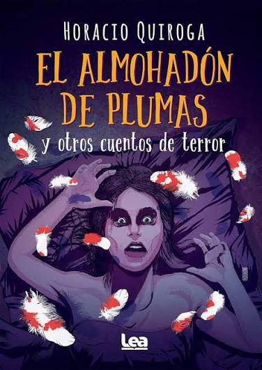

Alicia
Joven recién casada que comienza a sufrir una enfermedad misteriosa. Es sensible y afectuosa, pero vive en un ambiente frío y silencioso. Su deterioro físico constituye el conflicto central del cuento.

TERROR · LITERATURA · MISTERIO
Una joven recién casada comienza a debilitarse debido a una misteriosa enfermedad. Mientras su esposo y los médicos intentan descubrir qué le sucede, un peligro aterrador permanece oculto en el lugar menos esperado.
El almohadón de plumas
Horacio Quiroga
1907
Uruguaya
Narrativo
Terror
Cuento
Tercera persona
Alicia y Jordán
Miedo, enfermedad, misterio, muerte y aislamiento
Alicia y Jordán son una pareja de recién casados que comienza su vida matrimonial en una casa grande, silenciosa y de ambiente frío. Aunque Alicia ama a su esposo, la personalidad seria y reservada de Jordán hace que la convivencia resulte distante y poco afectuosa.
Con el paso del tiempo, Alicia comienza a sentirse enferma y cada vez más débil. Su estado de salud empeora rápidamente, por lo que debe permanecer acostada en su habitación.
Los médicos intentan descubrir el origen de su enfermedad, pero no encuentran una explicación clara para la pérdida progresiva de fuerzas que experimenta. La situación se vuelve más preocupante cuando Alicia comienza a sufrir alucinaciones y episodios de miedo.
Jordán observa con angustia el deterioro de su esposa, mientras la casa se convierte en un espacio de silencio, incertidumbre y desesperación.
Finalmente, Alicia muere. Después de su fallecimiento, la sirvienta descubre pequeñas manchas de sangre en el almohadón que utilizaba la joven. Al examinarlo, encuentran en su interior un enorme parásito que había estado alimentándose de su sangre.
El desenlace revela el origen de la enfermedad y transforma un objeto cotidiano en un elemento aterrador. La historia demuestra cómo el miedo puede surgir de aquello que parece completamente inofensivo.
Joven recién casada que comienza a sufrir una enfermedad misteriosa. Es sensible y afectuosa, pero vive en un ambiente frío y silencioso. Su deterioro físico constituye el conflicto central del cuento.
Esposo de Alicia. Tiene una personalidad seria, reservada y poco expresiva. Aunque se preocupa profundamente por ella, le resulta difícil demostrar sus sentimientos.
Trabajadora doméstica que participa en los acontecimientos finales del cuento. Descubre las manchas que permiten revelar el terrible secreto escondido en el almohadón.
Personajes secundarios que intentan diagnosticar la enfermedad de Alicia. Su incapacidad para explicar lo que sucede aumenta el misterio y la sensación de desesperación.
Criatura oculta dentro del almohadón. Es responsable de la pérdida progresiva de sangre de Alicia y constituye la revelación aterradora del desenlace.
Aunque no es un personaje humano, funciona como un elemento fundamental de la ambientación. Su frialdad, silencio y apariencia rígida intensifican la sensación de aislamiento y miedo.
El almohadón de plumas pertenece al subgénero narrativo de terror porque desarrolla una atmósfera inquietante mediante una enfermedad inexplicable, el deterioro progresivo de la protagonista y un desenlace perturbador. Horacio Quiroga demuestra que el miedo no siempre necesita fantasmas o fuerzas sobrenaturales: también puede surgir de situaciones cotidianas que esconden peligros desconocidos.
Después de explorar historias aterradoras, viajaremos a mundos donde la magia, las criaturas extraordinarias y lo imposible forman parte de la realidad.